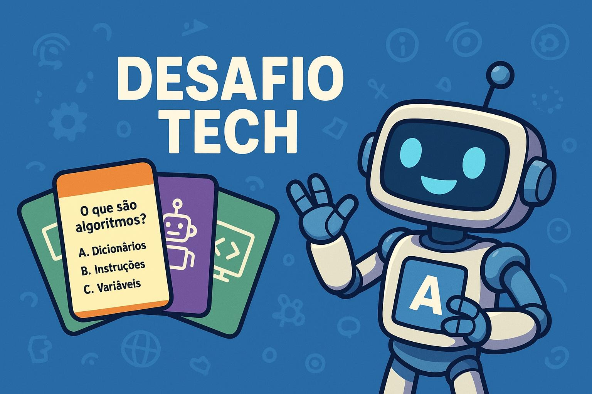

Desafio Tech é um jogo de cartas educativo e interativo, criado para tornar o aprendizado sobre robótica, tecnologia, informática e programação muito mais divertido! Inspirado no universo da Alura e na cultura digital, o jogo desafia os participantes a colocarem seus conhecimentos à prova por meio de perguntas envolventes e competitivas.
Mais do que um simples jogo, o Desafio Tech é uma ferramenta de aprendizado que estimula o raciocínio lógico, a curiosidade, a memória e a colaboração entre os jogadores.
Cada rodada é uma nova oportunidade de aprender algo sobre o fascinante mundo da tecnologia — desde conceitos básicos de hardware e software até temas modernos como inteligência artificial, automação, linguagens de programação e segurança digital.
O jogo foi criado para estimular o aprendizado por meio da diversão, incentivando a troca de conhecimentos entre amigos, colegas e familiares.
Cada rodada é uma oportunidade de testar o que você sabe sobre tecnologia, descobrir novas informações e se desafiar a pensar como um verdadeiro programador!
o Desafio Tech é indicado para todas as idades, especialmente para quem se interessa por tecnologia, robótica e informática.
Pode ser utilizado em salas de aula, clubes de robótica, oficinas de informática ou até em casa, como uma forma descontraída de revisar conteúdos e aprender coisas novas.
Além de promover o conhecimento técnico, o jogo desenvolve habilidades socioemocionais, como trabalho em equipe, atenção, comunicação e tomada de decisão.
No Desafio Tech, cada carta é uma missão, e cada acerto é um passo rumo ao domínio do mundo digital!
Mais do que um simples jogo, o Desafio Tech é uma ponte entre diversão e conhecimento, mostrando queaprender sobre tecnologia pode ser tão empolgante quanto jogar um game!